📜 Чертёж
 Чертёж Двухствольного дробовика 1Необычный
Чертёж Двухствольного дробовика 1Необычный

Чертёж Двухствольного дробовика 1
Открывает рецепт: Двухствольный дробовик (Необычный).
 Чертёж Двухствольного дробовика 2Редкий
Чертёж Двухствольного дробовика 2Редкий
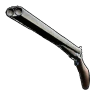
Чертёж Двухствольного дробовика 2
Открывает рецепт: Двухствольный дробовик (Редкий).
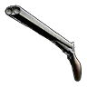
Чертёж Двухствольного дробовика 3Эпический

Чертёж Двухствольного дробовика 3
Открывает рецепт: Двухствольный дробовик (Эпический).
 Чертёж Двухствольного дробовика 4Легендарный
Чертёж Двухствольного дробовика 4Легендарный

Чертёж Двухствольного дробовика 4
Открывает рецепт: Двухствольный дробовик (Легендарный).
 Чертёж Клинка земли
Чертёж Клинка земли

Чертёж Клинка земли
[Коллаборация с Terraria] Открывает рецепт: Клинок Земли.
 Чертёж Клинка земли 1Необычный
Чертёж Клинка земли 1Необычный

Чертёж Клинка земли 1
[Коллаборация с Terraria] Открывает рецепт: Клинок Земли (Необычный).
 Чертёж Клинка земли 2Редкий
Чертёж Клинка земли 2Редкий

Чертёж Клинка земли 2
[Коллаборация с Terraria] Открывает рецепт: Клинок Земли (Редкий).
 Чертёж Клинка земли 3Эпический
Чертёж Клинка земли 3Эпический
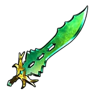
Чертёж Клинка земли 3
[Коллаборация с Terraria] Открывает рецепт: Клинок Земли (Эпический).
 Чертёж Клинка земли 4Легендарный
Чертёж Клинка земли 4Легендарный

Чертёж Клинка земли 4
[Коллаборация с Terraria] Открывает рецепт: Клинок Земли (Легендарный).
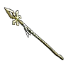
Чертёж Копья Лили 4Легендарный
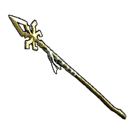
Чертёж Копья Лили 4
Открывает рецепт: Копьё Лили (Легендарный).
 Чертёж Мушкет 1Необычный
Чертёж Мушкет 1Необычный

Чертёж Мушкет 1
Открывает рецепт: Мушкет (Необычный).
 Чертёж Мушкет 2Редкий
Чертёж Мушкет 2Редкий

Чертёж Мушкет 2
Открывает рецепт: Мушкет (Редкий).
 Чертёж Мушкет 3Эпический
Чертёж Мушкет 3Эпический

Чертёж Мушкет 3
Открывает рецепт: Мушкет (Эпический).
 Чертёж Мушкет 4Легендарный
Чертёж Мушкет 4Легендарный
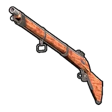
Чертёж Мушкет 4
Открывает рецепт: Мушкет (Легендарный).
 Чертёж Небесной печатиЭпический
Чертёж Небесной печатиЭпический
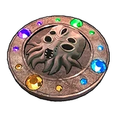
Чертёж Небесной печати
[Коллаборация с Terraria] Открывает рецепт: Небесная печать.
 Чертёж Ночного сияния
Чертёж Ночного сияния

Чертёж Ночного сияния
[Коллаборация с Terraria] Открывает рецепт: Ночное сияние.
 Чертёж Ночного сияния 1Необычный
Чертёж Ночного сияния 1Необычный

Чертёж Ночного сияния 1
[Коллаборация с Terraria] Открывает рецепт: Ночное сияние (Необычный).
 Чертёж Ночного сияния 2Редкий
Чертёж Ночного сияния 2Редкий

Чертёж Ночного сияния 2
[Коллаборация с Terraria] Открывает рецепт: Ночное сияние (Редкий).
 Чертёж Ночного сияния 3Эпический
Чертёж Ночного сияния 3Эпический

Чертёж Ночного сияния 3
[Коллаборация с Terraria] Открывает рецепт: Ночное сияние (Эпический).
 Чертёж Ночного сияния 4Легендарный
Чертёж Ночного сияния 4Легендарный

Чертёж Ночного сияния 4
[Коллаборация с Terraria] Открывает рецепт: Ночное сияние (Легендарный).
 Чертёж Пал-Металл брони 1Необычный
Чертёж Пал-Металл брони 1Необычный

Чертёж Пал-Металл брони 1
Открывает рецепт: Пал-Металл броня (Необычный).
 Чертёж Пал-Металл брони 2Редкий
Чертёж Пал-Металл брони 2Редкий

Чертёж Пал-Металл брони 2
Открывает рецепт: Пал-Металл броня (Редкий).
 Чертёж Пал-Металл брони 3Эпический
Чертёж Пал-Металл брони 3Эпический

Чертёж Пал-Металл брони 3
Открывает рецепт: Пал-Металл броня (Эпический).
 Чертёж Пал-Металл брони 4Легендарный
Чертёж Пал-Металл брони 4Легендарный

Чертёж Пал-Металл брони 4
Открывает рецепт: Пал-Металл броня (Легендарный).
 Чертёж Пал-Металл шлема 1Необычный
Чертёж Пал-Металл шлема 1Необычный
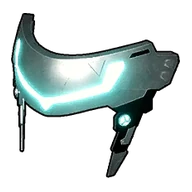
Чертёж Пал-Металл шлема 1
Открывает рецепт: Пал-Металл шлем (Необычный).
 Чертёж Пал-Металл шлема 2Редкий
Чертёж Пал-Металл шлема 2Редкий

Чертёж Пал-Металл шлема 2
Открывает рецепт: Пал-Металл шлем (Редкий).
 Чертёж Пал-Металл шлема 3Эпический
Чертёж Пал-Металл шлема 3Эпический

Чертёж Пал-Металл шлема 3
Открывает рецепт: Пал-Металл шлем (Эпический).
 Чертёж Пал-Металл шлема 4Легендарный
Чертёж Пал-Металл шлема 4Легендарный

Чертёж Пал-Металл шлема 4
Открывает рецепт: Пал-Металл шлем (Легендарный).
 Чертёж Пушки вихря
Чертёж Пушки вихря

Чертёж Пушки вихря
[Коллаборация с Terraria] Открывает рецепт: Пушка вихря.
 Чертёж Пушки вихря 1Необычный
Чертёж Пушки вихря 1Необычный
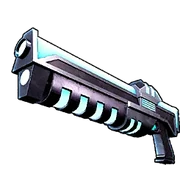
Чертёж Пушки вихря 1
[Коллаборация с Terraria] Открывает рецепт: Пушка вихря (Необычный).
 Чертёж Пушки вихря 2Редкий
Чертёж Пушки вихря 2Редкий

Чертёж Пушки вихря 2
[Коллаборация с Terraria] Открывает рецепт: Пушка вихря (Редкий).
 Чертёж Пушки вихря 3Эпический
Чертёж Пушки вихря 3Эпический

Чертёж Пушки вихря 3
[Коллаборация с Terraria] Открывает рецепт: Пушка вихря (Эпический).
 Чертёж Пушки вихря 4Легендарный
Чертёж Пушки вихря 4Легендарный

Чертёж Пушки вихря 4
[Коллаборация с Terraria] Открывает рецепт: Пушка вихря (Легендарный).
 Чертёж Святого капюшона
Чертёж Святого капюшона

Чертёж Святого капюшона
[Коллаборация с Terraria] Открывает рецепт: Святой капюшон.
 Чертёж Святого капюшона 1Необычный
Чертёж Святого капюшона 1Необычный
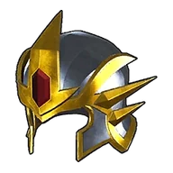
Чертёж Святого капюшона 1
[Коллаборация с Terraria] Открывает рецепт: Святой капюшон (Необычный).
 Чертёж Святого капюшона 2Редкий
Чертёж Святого капюшона 2Редкий

Чертёж Святого капюшона 2
[Коллаборация с Terraria] Открывает рецепт: Святой капюшон (Редкий).
 Чертёж Святого капюшона 3Эпический
Чертёж Святого капюшона 3Эпический

Чертёж Святого капюшона 3
[Коллаборация с Terraria] Открывает рецепт: Святой капюшон (Эпический).
 Чертёж Святого капюшона 4Легендарный
Чертёж Святого капюшона 4Легендарный

Чертёж Святого капюшона 4
[Коллаборация с Terraria] Открывает рецепт: Святой капюшон (Легендарный).
 Чертёж Святого наголовника
Чертёж Святого наголовника
Чертёж Святого наголовника
[Коллаборация с Terraria] Открывает рецепт: Святой наголовник.
 Чертёж Святого наголовника 1Необычный
Чертёж Святого наголовника 1Необычный

Чертёж Святого наголовника 1
[Коллаборация с Terraria] Открывает рецепт: Святой наголовник (Необычный).
Чертёж Святого наголовника 2Редкий

Чертёж Святого наголовника 2
[Коллаборация с Terraria] Открывает рецепт: Святой наголовник (Редкий).
 Чертёж Святого наголовника 3Эпический
Чертёж Святого наголовника 3Эпический

Чертёж Святого наголовника 3
[Коллаборация с Terraria] Открывает рецепт: Святой наголовник (Эпический).
 Чертёж Святого наголовника 4Легендарный
Чертёж Святого наголовника 4Легендарный

Чертёж Святого наголовника 4
[Коллаборация с Terraria] Открывает рецепт: Святой наголовник (Легендарный).
 Чертёж Святого нагрудника
Чертёж Святого нагрудника

Чертёж Святого нагрудника
[Коллаборация с Terraria] Открывает рецепт: Святой нагрудник.
 Чертёж Святого нагрудника 1Необычный
Чертёж Святого нагрудника 1Необычный

Чертёж Святого нагрудника 1
[Коллаборация с Terraria] Открывает рецепт: Святой нагрудник (Необычный).
 Чертёж Святого нагрудника 2Редкий
Чертёж Святого нагрудника 2Редкий

Чертёж Святого нагрудника 2
[Коллаборация с Terraria] Открывает рецепт: Святой нагрудник (Редкий).
 Чертёж Святого нагрудника 3Эпический
Чертёж Святого нагрудника 3Эпический
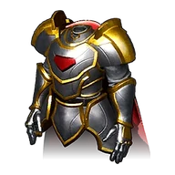
Чертёж Святого нагрудника 3
[Коллаборация с Terraria] Открывает рецепт: Святой нагрудник (Эпический).
 Чертёж Святого нагрудника 4Легендарный
Чертёж Святого нагрудника 4Легендарный

Чертёж Святого нагрудника 4
[Коллаборация с Terraria] Открывает рецепт: Святой нагрудник (Легендарный).
 Чертёж Святого шлема
Чертёж Святого шлема

Чертёж Святого шлема
[Коллаборация с Terraria] Открывает рецепт: Святой шлем.
 Чертёж Святого шлема 1Необычный
Чертёж Святого шлема 1Необычный

Чертёж Святого шлема 1
[Коллаборация с Terraria] Открывает рецепт: Святой шлем (Необычный).
Чертёж Святого шлема 2Редкий
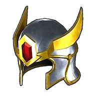
Чертёж Святого шлема 2
[Коллаборация с Terraria] Открывает рецепт: Святой шлем (Редкий).
 Чертёж Святого шлема 3Эпический
Чертёж Святого шлема 3Эпический

Чертёж Святого шлема 3
[Коллаборация с Terraria] Открывает рецепт: Святой шлем (Эпический).
 Чертёж Святого шлема 4Легендарный
Чертёж Святого шлема 4Легендарный

Чертёж Святого шлема 4
[Коллаборация с Terraria] Открывает рецепт: Святой шлем (Легендарный).
 Чертёж Святой маски
Чертёж Святой маски
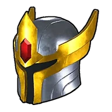
Чертёж Святой маски
[Коллаборация с Terraria] Открывает рецепт: Святая маска.
 Чертёж Святой маски 1Необычный
Чертёж Святой маски 1Необычный

Чертёж Святой маски 1
[Коллаборация с Terraria] Открывает рецепт: Святая маска (Необычный).
 Чертёж Святой маски 2Редкий
Чертёж Святой маски 2Редкий

Чертёж Святой маски 2
[Коллаборация с Terraria] Открывает рецепт: Святая маска (Редкий).
 Чертёж Святой маски 3Эпический
Чертёж Святой маски 3Эпический

Чертёж Святой маски 3
[Коллаборация с Terraria] Открывает рецепт: Святая маска (Эпический).
 Чертёж Святой маски 4Легендарный
Чертёж Святой маски 4Легендарный

Чертёж Святой маски 4
[Коллаборация с Terraria] Открывает рецепт: Святая маска (Легендарный).
 Чертёж Террапризмы
Чертёж Террапризмы
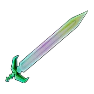
Чертёж Террапризмы
[Коллаборация с Terraria] Открывает рецепт: Террапризма.
 Чертёж Террапризмы 1Необычный
Чертёж Террапризмы 1Необычный

Чертёж Террапризмы 1
[Коллаборация с Terraria] Открывает рецепт: Террапризма (Необычный).
 Чертёж Террапризмы 2Редкий
Чертёж Террапризмы 2Редкий

Чертёж Террапризмы 2
[Коллаборация с Terraria] Открывает рецепт: Террапризма (Редкий).
 Чертёж Террапризмы 3Эпический
Чертёж Террапризмы 3Эпический

Чертёж Террапризмы 3
[Коллаборация с Terraria] Открывает рецепт: Террапризма (Эпический).
 Чертёж Террапризмы 4Легендарный
Чертёж Террапризмы 4Легендарный

Чертёж Террапризмы 4
[Коллаборация с Terraria] Открывает рецепт: Террапризма (Легендарный).
 Чертёж Экскалибура
Чертёж Экскалибура

Чертёж Экскалибура
[Коллаборация с Terraria] Открывает рецепт: Экскалибур.
 Чертёж Экскалибура 1Необычный
Чертёж Экскалибура 1Необычный

Чертёж Экскалибура 1
[Коллаборация с Terraria] Открывает рецепт: Экскалибур (Необычный).
 Чертёж Экскалибура 2Редкий
Чертёж Экскалибура 2Редкий

Чертёж Экскалибура 2
[Коллаборация с Terraria] Открывает рецепт: Экскалибур (Редкий).
 Чертёж Экскалибура 3Эпический
Чертёж Экскалибура 3Эпический

Чертёж Экскалибура 3
[Коллаборация с Terraria] Открывает рецепт: Экскалибур (Эпический).
Чертёж Экскалибура 4Легендарный
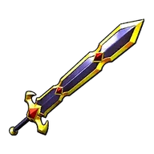
Чертёж Экскалибура 4
[Коллаборация с Terraria] Открывает рецепт: Экскалибур (Легендарный).
Чертёж Японского садового фонаря
Чертёж Японского садового фонаря
Если предмет находится в инвентаре или хранится на базе, становится доступна постройка: Японский садовый фонарь.
Чертёж академической шапочки 1
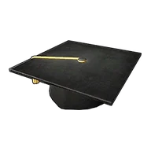
Чертёж академической шапочки 1
Открывает рецепт: Академическая шапочка (Обычный).
 Чертёж амулета ВумпоЭпический
Чертёж амулета ВумпоЭпический
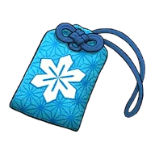
Чертёж амулета Вумпо
Открывает рецепт: Амулет Вумпо (Эпический).
 Чертёж амулета РептироЭпический
Чертёж амулета РептироЭпический

Чертёж амулета Рептиро
Открывает рецепт: Амулет Рептиро (Эпический).
 Чертёж амулета атакиРедкий
Чертёж амулета атакиРедкий
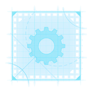
Чертёж амулета атаки
Открывает рецепт: Амулет атаки (Редкий).
 Чертёж амулета бродячего торговцаЭпический
Чертёж амулета бродячего торговцаЭпический
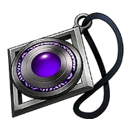
Чертёж амулета бродячего торговца
Открывает рецепт: Амулет бродячего торговца (Эпический).
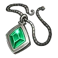
Чертёж амулета жизниРедкий

Чертёж амулета жизни
Открывает рецепт: Амулет жизни (Редкий).
 Чертёж амулета защитыРедкий
Чертёж амулета защитыРедкий
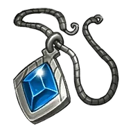
Чертёж амулета защиты
Открывает рецепт: Амулет защиты (Редкий).
 Чертёж амулета передового отрядаЭпический
Чертёж амулета передового отрядаЭпический
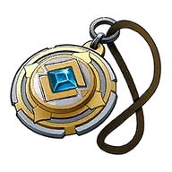
Чертёж амулета передового отряда
Открывает рецепт: Амулет передового отряда (Эпический).
 Чертёж амулета усердияРедкий
Чертёж амулета усердияРедкий

Чертёж амулета усердия
Открывает рецепт: Амулет усердия (Редкий).
 Чертёж арбалета 1Необычный
Чертёж арбалета 1Необычный

Чертёж арбалета 1
Открывает рецепт: Арбалет (Необычный).
 Чертёж арбалета 2Редкий
Чертёж арбалета 2Редкий

Чертёж арбалета 2
Открывает рецепт: Арбалет (Редкий).
 Чертёж арбалета 3Эпический
Чертёж арбалета 3Эпический

Чертёж арбалета 3
Открывает рецепт: Арбалет (Эпический).
 Чертёж арбалета 4Легендарный
Чертёж арбалета 4Легендарный
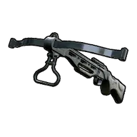
Чертёж арбалета 4
Открывает рецепт: Арбалет (Легендарный).
Чертёж баннера Организации по Защите Палов
Чертёж баннера Организации по Защите Палов
Если предмет находится в инвентаре или хранится на базе, становится доступна постройка: Баннер Организации по Защите Палов.
 Чертёж блочного лука 1Необычный
Чертёж блочного лука 1Необычный

Чертёж блочного лука 1
Открывает рецепт: Блочный лук (Необычный).
 Чертёж блочного лука 2Редкий
Чертёж блочного лука 2Редкий

Чертёж блочного лука 2
Открывает рецепт: Блочный лук (Редкий).
 Чертёж блочного лука 3Эпический
Чертёж блочного лука 3Эпический

Чертёж блочного лука 3
Открывает рецепт: Блочный лук (Эпический).
 Чертёж блочного лука 4Легендарный
Чертёж блочного лука 4Легендарный

Чертёж блочного лука 4
Открывает рецепт: Блочный лук (Легендарный).
 Чертёж боевого пистолета-пулемёта 1Необычный
Чертёж боевого пистолета-пулемёта 1Необычный

Чертёж боевого пистолета-пулемёта 1
Открывает рецепт: Боевой пистолет-пулемёт (Необычный).
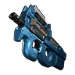
Чертёж боевого пистолета-пулемёта 2Редкий

Чертёж боевого пистолета-пулемёта 2
Открывает рецепт: Боевой пистолет-пулемёт (Редкий).
 Чертёж боевого пистолета-пулемёта 3Эпический
Чертёж боевого пистолета-пулемёта 3Эпический
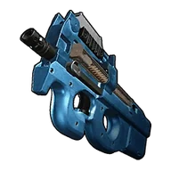
Чертёж боевого пистолета-пулемёта 3
Открывает рецепт: Боевой пистолет-пулемёт (Эпический).
 Чертёж боевого пистолета-пулемёта 4Легендарный
Чертёж боевого пистолета-пулемёта 4Легендарный

Чертёж боевого пистолета-пулемёта 4
Открывает рецепт: Боевой пистолет-пулемёт (Легендарный).
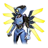
Чертёж брони V1 4Легендарный

Чертёж брони V1 4
[Коллаборация с ULTRAKILL] Открывает рецепт: Броня V1 (Легендарный).
 Чертёж брони V2 4Легендарный
Чертёж брони V2 4Легендарный
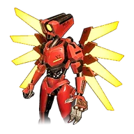
Чертёж брони V2 4
[Коллаборация с ULTRAKILL] Открывает рецепт: Броня V2 (Легендарный).
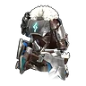
Чертёж брони из рафинированного металла 1Необычный

Чертёж брони из рафинированного металла 1
Открывает рецепт: Броня из рафинированного металла (Необычный).
 Чертёж брони из рафинированного металла 2Редкий
Чертёж брони из рафинированного металла 2Редкий
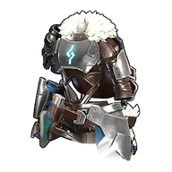
Чертёж брони из рафинированного металла 2
Открывает рецепт: Броня из рафинированного металла (Редкий).
 Чертёж брони из рафинированного металла 3Эпический
Чертёж брони из рафинированного металла 3Эпический

Чертёж брони из рафинированного металла 3
Открывает рецепт: Броня из рафинированного металла (Эпический).
 Чертёж брони из рафинированного металла 4Легендарный
Чертёж брони из рафинированного металла 4Легендарный

Чертёж брони из рафинированного металла 4
Открывает рецепт: Броня из рафинированного металла (Легендарный).
Чертёж бумажного фонарика
Чертёж бумажного фонарика
Если предмет находится в инвентаре или хранится на базе, становится доступна постройка: Бумажный фонарик.
 Чертёж ведьминого колпака 1
Чертёж ведьминого колпака 1

Чертёж ведьминого колпака 1
Открывает рецепт: Ведьмин колпак (Обычный).
Чертёж величественного настенного факела
Чертёж величественного настенного факела
Если предмет находится в инвентаре или хранится на базе, становится доступна постройка: Величественный настенный факел.
Чертёж величественного подсвечника
Чертёж величественного подсвечника
Если предмет находится в инвентаре или хранится на базе, становится доступна постройка: Величественный подсвечник.
 Чертёж ветхого дробовика 1Необычный
Чертёж ветхого дробовика 1Необычный

Чертёж ветхого дробовика 1
Открывает рецепт: Ветхий дробовик (Необычный).
 Чертёж ветхого дробовика 2Редкий
Чертёж ветхого дробовика 2Редкий
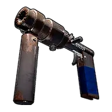
Чертёж ветхого дробовика 2
Открывает рецепт: Ветхий дробовик (Редкий).
 Чертёж ветхого дробовика 3Эпический
Чертёж ветхого дробовика 3Эпический

Чертёж ветхого дробовика 3
Открывает рецепт: Ветхий дробовик (Эпический).
 Чертёж ветхого дробовика 4Легендарный
Чертёж ветхого дробовика 4Легендарный

Чертёж ветхого дробовика 4
Открывает рецепт: Ветхий дробовик (Легендарный).
 Чертёж ветхого пистолета-пулемёта 1Необычный
Чертёж ветхого пистолета-пулемёта 1Необычный

Чертёж ветхого пистолета-пулемёта 1
Открывает рецепт: Ветхий пистолет‑пулемёт (Необычный).
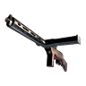
Чертёж ветхого пистолета-пулемёта 2Редкий

Чертёж ветхого пистолета-пулемёта 2
Открывает рецепт: Ветхий пистолет‑пулемёт (Редкий).
 Чертёж ветхого пистолета-пулемёта 3Эпический
Чертёж ветхого пистолета-пулемёта 3Эпический
Чертёж ветхого пистолета-пулемёта 3
Открывает рецепт: Ветхий пистолет‑пулемёт (Эпический).
 Чертёж ветхого пистолета-пулемёта 4Легендарный
Чертёж ветхого пистолета-пулемёта 4Легендарный

Чертёж ветхого пистолета-пулемёта 4
Открывает рецепт: Ветхий пистолет‑пулемёт (Легендарный).
 Чертёж ветхой штурмовой винтовки 1Необычный
Чертёж ветхой штурмовой винтовки 1Необычный

Чертёж ветхой штурмовой винтовки 1
Открывает рецепт: Ветхая штурмовая винтовка (Необычный).
 Чертёж ветхой штурмовой винтовки 2Редкий
Чертёж ветхой штурмовой винтовки 2Редкий

Чертёж ветхой штурмовой винтовки 2
Открывает рецепт: Ветхая штурмовая винтовка (Редкий).
 Чертёж ветхой штурмовой винтовки 3Эпический
Чертёж ветхой штурмовой винтовки 3Эпический

Чертёж ветхой штурмовой винтовки 3
Открывает рецепт: Ветхая штурмовая винтовка (Эпический).
 Чертёж ветхой штурмовой винтовки 4Легендарный
Чертёж ветхой штурмовой винтовки 4Легендарный

Чертёж ветхой штурмовой винтовки 4
Открывает рецепт: Ветхая штурмовая винтовка (Легендарный).
 Чертёж воздухохода Mk-EXЭпический
Чертёж воздухохода Mk-EXЭпический

Чертёж воздухохода Mk-EX
Открывает рецепт: Воздухоход Mk-EX (Эпический).
 Чертёж воздухохода Mk-ⅠЭпический
Чертёж воздухохода Mk-ⅠЭпический

Чертёж воздухохода Mk-Ⅰ
Открывает рецепт: Воздухоход Mk-Ⅰ (Эпический).
 Чертёж воздухохода Mk-ⅡЭпический
Чертёж воздухохода Mk-ⅡЭпический

Чертёж воздухохода Mk-Ⅱ
Открывает рецепт: Воздухоход Mk-Ⅱ (Эпический).
 Чертёж воздухохода Mk-ⅢЭпический
Чертёж воздухохода Mk-ⅢЭпический

Чертёж воздухохода Mk-Ⅲ
Открывает рецепт: Воздухоход Mk-Ⅲ (Эпический).
 Чертёж гексолитового шлема 1Необычный
Чертёж гексолитового шлема 1Необычный

Чертёж гексолитового шлема 1
Открывает рецепт: Гексолитовый шлем (Необычный).
 Чертёж гексолитового шлема 2Редкий
Чертёж гексолитового шлема 2Редкий

Чертёж гексолитового шлема 2
Открывает рецепт: Гексолитовый шлем (Редкий).
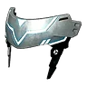
Чертёж гексолитового шлема 3Эпический

Чертёж гексолитового шлема 3
Открывает рецепт: Гексолитовый шлем (Эпический).
 Чертёж гексолитового шлема 4Легендарный
Чертёж гексолитового шлема 4Легендарный
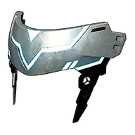
Чертёж гексолитового шлема 4
Открывает рецепт: Гексолитовый шлем (Легендарный).
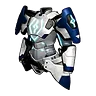
Чертёж гексолитовой брони 1Необычный

Чертёж гексолитовой брони 1
Открывает рецепт: Гексолитовая броня (Необычный).
 Чертёж гексолитовой брони 2Редкий
Чертёж гексолитовой брони 2Редкий

Чертёж гексолитовой брони 2
Открывает рецепт: Гексолитовая броня (Редкий).
 Чертёж гексолитовой брони 3Эпический
Чертёж гексолитовой брони 3Эпический

Чертёж гексолитовой брони 3
Открывает рецепт: Гексолитовая броня (Эпический).
 Чертёж гексолитовой брони 4Легендарный
Чертёж гексолитовой брони 4Легендарный

Чертёж гексолитовой брони 4
Открывает рецепт: Гексолитовая броня (Легендарный).
 Чертёж гранатомёта 1Необычный
Чертёж гранатомёта 1Необычный

Чертёж гранатомёта 1
Открывает рецепт: Гранатомёт (Необычный).
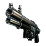
Чертёж гранатомёта 2Редкий

Чертёж гранатомёта 2
Открывает рецепт: Гранатомёт (Редкий).
 Чертёж гранатомёта 3Эпический
Чертёж гранатомёта 3Эпический
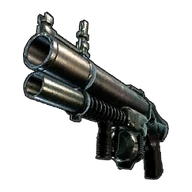
Чертёж гранатомёта 3
Открывает рецепт: Гранатомёт (Эпический).
 Чертёж гранатомёта 4Легендарный
Чертёж гранатомёта 4Легендарный

Чертёж гранатомёта 4
Открывает рецепт: Гранатомёт (Легендарный).
Чертёж деревянного заграждения
Чертёж деревянного заграждения
Если предмет находится в инвентаре или хранится на базе, становится доступна постройка: Деревянное заграждение.
 Чертёж древнего шлема 1Необычный
Чертёж древнего шлема 1Необычный

Чертёж древнего шлема 1
Открывает рецепт: Древний шлем (Необычный).
 Чертёж древнего шлема 2Редкий
Чертёж древнего шлема 2Редкий
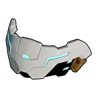
Чертёж древнего шлема 2
Открывает рецепт: Древний шлем (Редкий).
 Чертёж древнего шлема 3Эпический
Чертёж древнего шлема 3Эпический

Чертёж древнего шлема 3
Открывает рецепт: Древний шлем (Эпический).
 Чертёж древнего шлема 4Легендарный
Чертёж древнего шлема 4Легендарный

Чертёж древнего шлема 4
Открывает рецепт: Древний шлем (Легендарный).
 Чертёж древней брони 1Необычный
Чертёж древней брони 1Необычный
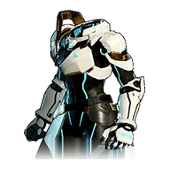
Чертёж древней брони 1
Открывает рецепт: Древняя броня» (Необычный).
 Чертёж древней брони 2Редкий
Чертёж древней брони 2Редкий

Чертёж древней брони 2
Открывает рецепт: Древняя броня (Редкий).
 Чертёж древней брони 3Эпический
Чертёж древней брони 3Эпический

Чертёж древней брони 3
Открывает рецепт: Древняя броня (Эпический).
 Чертёж древней брони 4Легендарный
Чертёж древней брони 4Легендарный

Чертёж древней брони 4
Открывает рецепт: Древняя броня (Легендарный).
 Чертёж дробовика с выбросом ядра 4Легендарный
Чертёж дробовика с выбросом ядра 4Легендарный

Чертёж дробовика с выбросом ядра 4
[Коллаборация с ULTRAKILL] Открывает рецепт: Дробовик с выбросом ядра (Легендарный).
 Чертёж дрономёта 1Необычный
Чертёж дрономёта 1Необычный

Чертёж дрономёта 1
Открывает рецепт: Дрономёт (Необычный).
 Чертёж дрономёта 2Редкий
Чертёж дрономёта 2Редкий

Чертёж дрономёта 2
Открывает рецепт: Дрономёт (Редкий).
 Чертёж дрономёта 3Эпический
Чертёж дрономёта 3Эпический
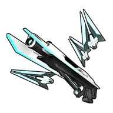
Чертёж дрономёта 3
Открывает рецепт: Дрономёт (Эпический).
 Чертёж дрономёта 4Легендарный
Чертёж дрономёта 4Легендарный

Чертёж дрономёта 4
Открывает рецепт: Дрономёт (Легендарный).
 Чертёж жаро- и морозостойкого термобельяРедкий
Чертёж жаро- и морозостойкого термобельяРедкий
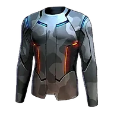
Чертёж жаро- и морозостойкого термобелья
Открывает рецепт: Жаро- и морозостойкое термобельё (Редкий).
 Чертёж жаростойкого термобельяРедкий
Чертёж жаростойкого термобельяРедкий

Чертёж жаростойкого термобелья
Открывает рецепт: Жаростойкое термобельё (Редкий).
 Чертёж жаростойкой брони из Пал-Металла 1Необычный
Чертёж жаростойкой брони из Пал-Металла 1Необычный

Чертёж жаростойкой брони из Пал-Металла 1
Открывает рецепт: Жаростойкая броня из Пал-Металла (Необычный).
 Чертёж жаростойкой брони из Пал-Металла 2Редкий
Чертёж жаростойкой брони из Пал-Металла 2Редкий
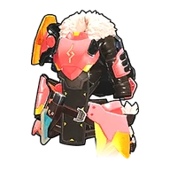
Чертёж жаростойкой брони из Пал-Металла 2
Открывает рецепт: Жаростойкая броня из Пал-Металла (Редкий).
 Чертёж жаростойкой брони из Пал-Металла 3Эпический
Чертёж жаростойкой брони из Пал-Металла 3Эпический

Чертёж жаростойкой брони из Пал-Металла 3
Открывает рецепт: Жаростойкая броня из Пал-Металла (Эпический).
 Чертёж жаростойкой брони из Пал-Металла 4Легендарный
Чертёж жаростойкой брони из Пал-Металла 4Легендарный

Чертёж жаростойкой брони из Пал-Металла 4
Открывает рецепт: Жаростойкая броня из Пал-Металла (Легендарный).
 Чертёж жаростойкой брони из гексолита 1Необычный
Чертёж жаростойкой брони из гексолита 1Необычный

Чертёж жаростойкой брони из гексолита 1
Открывает рецепт: Жаростойкая броня из гексолита (Необычный).
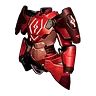
Чертёж жаростойкой брони из гексолита 2Редкий

Чертёж жаростойкой брони из гексолита 2
Открывает рецепт: Жаростойкая броня из гексолита (Редкий).
 Чертёж жаростойкой брони из гексолита 3Эпический
Чертёж жаростойкой брони из гексолита 3Эпический

Чертёж жаростойкой брони из гексолита 3
Открывает рецепт: Жаростойкая броня из гексолита (Эпический).
 Чертёж жаростойкой брони из гексолита 4Легендарный
Чертёж жаростойкой брони из гексолита 4Легендарный
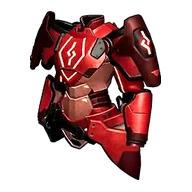
Чертёж жаростойкой брони из гексолита 4
Открывает рецепт: Жаростойкая броня из гексолита (Легендарный).
 Чертёж жаростойкой брони из рафинированного металла 1Необычный
Чертёж жаростойкой брони из рафинированного металла 1Необычный
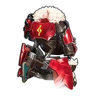
Чертёж жаростойкой брони из рафинированного металла 1
Открывает рецепт: Жаростойкая броня из рафинированного металла (Необычный).
 Чертёж жаростойкой брони из рафинированного металла 2Редкий
Чертёж жаростойкой брони из рафинированного металла 2Редкий

Чертёж жаростойкой брони из рафинированного металла 2
Открывает рецепт: Жаростойкая броня из рафинированного металла (Редкий).
 Чертёж жаростойкой брони из рафинированного металла 3Эпический
Чертёж жаростойкой брони из рафинированного металла 3Эпический

Чертёж жаростойкой брони из рафинированного металла 3
Открывает рецепт: Жаростойкая броня из рафинированного металла (Эпический).
 Чертёж жаростойкой брони из рафинированного металла 4Легендарный
Чертёж жаростойкой брони из рафинированного металла 4Легендарный

Чертёж жаростойкой брони из рафинированного металла 4
Открывает рецепт: Жаростойкая броня из рафинированного металла (Легендарный).
 Чертёж жаростойкой металлической брони 1Необычный
Чертёж жаростойкой металлической брони 1Необычный

Чертёж жаростойкой металлической брони 1
Открывает рецепт: Жаростойкая металлическая броня (Необычный).
 Чертёж жаростойкой металлической брони 2Редкий
Чертёж жаростойкой металлической брони 2Редкий

Чертёж жаростойкой металлической брони 2
Открывает рецепт: Жаростойкая металлическая броня (Редкий).
 Чертёж жаростойкой металлической брони 3Эпический
Чертёж жаростойкой металлической брони 3Эпический

Чертёж жаростойкой металлической брони 3
Открывает рецепт: Жаростойкая металлическая броня (Эпический).
 Чертёж жаростойкой металлической брони 4Легендарный
Чертёж жаростойкой металлической брони 4Легендарный
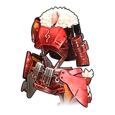
Чертёж жаростойкой металлической брони 4
Открывает рецепт: Жаростойкая металлическая броня (Легендарный).
 Чертёж жаростойкой меховой брони 1Необычный
Чертёж жаростойкой меховой брони 1Необычный

Чертёж жаростойкой меховой брони 1
Открывает рецепт: Жаростойкая меховая броня (Необычный).
 Чертёж жаростойкой меховой брони 2Редкий
Чертёж жаростойкой меховой брони 2Редкий
Чертёж жаростойкой меховой брони 2
Открывает рецепт: Жаростойкая меховая броня (Редкий).
 Чертёж жаростойкой меховой брони 3Эпический
Чертёж жаростойкой меховой брони 3Эпический

Чертёж жаростойкой меховой брони 3
Открывает рецепт: Жаростойкая меховая броня (Эпический).
 Чертёж жаростойкой меховой брони 4Легендарный
Чертёж жаростойкой меховой брони 4Легендарный

Чертёж жаростойкой меховой брони 4
Открывает рецепт: Жаростойкая меховая броня (Легендарный).
 Чертёж жаростойкой сталепластиковой брони 1Необычный
Чертёж жаростойкой сталепластиковой брони 1Необычный

Чертёж жаростойкой сталепластиковой брони 1
Открывает рецепт: Жаростойкая сталепластиковая броня (Необычный).
 Чертёж жаростойкой сталепластиковой брони 2Редкий
Чертёж жаростойкой сталепластиковой брони 2Редкий

Чертёж жаростойкой сталепластиковой брони 2
Открывает рецепт: Жаростойкая сталепластиковая броня (Редкий).
 Чертёж жаростойкой сталепластиковой брони 3Эпический
Чертёж жаростойкой сталепластиковой брони 3Эпический

Чертёж жаростойкой сталепластиковой брони 3
Открывает рецепт: Жаростойкая сталепластиковая броня (Эпический).
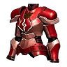
Чертёж жаростойкой сталепластиковой брони 4Легендарный

Чертёж жаростойкой сталепластиковой брони 4
Открывает рецепт: Жаростойкая сталепластиковая броня (Легендарный).
Чертёж забора из колючей проволоки
Чертёж забора из колючей проволоки
Если предмет находится в инвентаре или хранится на базе, становится доступна постройка: Проволочный забор.
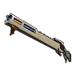
Чертёж зарядной винтовки 1Необычный

Чертёж зарядной винтовки 1
Открывает рецепт: Зарядная винтовка (Необычный). цив.
 Чертёж зарядной винтовки 2Редкий
Чертёж зарядной винтовки 2Редкий

Чертёж зарядной винтовки 2
Открывает рецепт: Зарядная винтовка (Редкий). цив.
 Чертёж зарядной винтовки 3Эпический
Чертёж зарядной винтовки 3Эпический

Чертёж зарядной винтовки 3
Открывает рецепт: Зарядная винтовка (Эпический). цив.
 Чертёж зарядной винтовки 4Легендарный
Чертёж зарядной винтовки 4Легендарный

Чертёж зарядной винтовки 4
Открывает рецепт: Зарядная винтовка (Легендарный). цив.
 Чертёж золотой короны 1
Чертёж золотой короны 1

Чертёж золотой короны 1
Открывает рецепт: Золотая корона (Обычный).
 Чертёж капюшона Лизпанка 1
Чертёж капюшона Лизпанка 1
Чертёж капюшона Лизпанка 1
Открывает рецепт: Капюшон Лизпанка (Обычный).
 Чертёж катаны 1Необычный
Чертёж катаны 1Необычный

Чертёж катаны 1
Открывает рецепт: Катана (Необычный).
Чертёж катаны 2Редкий

Чертёж катаны 2
Открывает рецепт: Катана (Редкий).
 Чертёж катаны 3Эпический
Чертёж катаны 3Эпический

Чертёж катаны 3
Открывает рецепт: Катана (Эпический).
 Чертёж катаны 4Легендарный
Чертёж катаны 4Легендарный
Чертёж катаны 4
Открывает рецепт: Катана (Легендарный).
Чертёж колокольчика ускорения ростаРедкий

Чертёж колокольчика ускорения роста
Открывает рецепт: Колокольчик ускорения роста (Редкий).
 Чертёж кольца БлейзхаулаЭпический
Чертёж кольца БлейзхаулаЭпический
Чертёж кольца Блейзхаула
Открывает рецепт: Кольцо Блейзхаула (Эпический).
 Чертёж кольца ВаэлетаЭпический
Чертёж кольца ВаэлетаЭпический
Чертёж кольца Ваэлета
Открывает рецепт: Кольцо Ваэлета (Эпический).
Чертёж кольца КатрессаЭпический

Чертёж кольца Катресса
Открывает рецепт: Кольцо Катресса (Эпический).
 Чертёж кольца КриолинксаЭпический
Чертёж кольца КриолинксаЭпический

Чертёж кольца Криолинкса
Открывает рецепт: Кольцо Криолинкса (Эпический).
 Чертёж кольца Менастинг ТерраЭпический
Чертёж кольца Менастинг ТерраЭпический
Чертёж кольца Менастинг Терра
Открывает рецепт: Кольцо Менастинг Терра (Эпический).
 Чертёж кольца Фалерис АкваЭпический
Чертёж кольца Фалерис АкваЭпический
Чертёж кольца Фалерис Аква
Открывает рецепт: Кольцо Фалерис Аква (Эпический).
 Чертёж кольца ФалерисаЭпический
Чертёж кольца ФалерисаЭпический
Чертёж кольца Фалериса
Открывает рецепт: Кольцо Фалериса (Эпический).
 Чертёж кольца Фенглоп ЛаксаЭпический
Чертёж кольца Фенглоп ЛаксаЭпический
Чертёж кольца Фенглоп Лакса
Открывает рецепт: Кольцо Фенглоп Лакса (Эпический).
 Чертёж кольца ЭлфидранаЭпический
Чертёж кольца ЭлфидранаЭпический

Чертёж кольца Элфидрана
Открывает рецепт: Кольцо Элфидрана (Эпический).
 Чертёж кольца доверияЭпический
Чертёж кольца доверияЭпический
Чертёж кольца доверия
Открывает рецепт: Кольцо доверия (Эпический).
Чертёж кольца защиты от водыРедкий
Чертёж кольца защиты от воды
Открывает рецепт: Кольцо защиты от воды (Редкий).
 Чертёж кольца защиты от драконовРедкий
Чертёж кольца защиты от драконовРедкий

Чертёж кольца защиты от драконов
Открывает рецепт: Кольцо защиты от драконов (Редкий).
 Чертёж кольца защиты от землиРедкий
Чертёж кольца защиты от землиРедкий
Чертёж кольца защиты от земли
Открывает рецепт: Кольцо защиты от земли (Редкий).
 Чертёж кольца защиты от льдаРедкий
Чертёж кольца защиты от льдаРедкий

Чертёж кольца защиты от льда
Открывает рецепт: Кольцо защиты от льда (Редкий).
 Чертёж кольца защиты от молнииРедкий
Чертёж кольца защиты от молнииРедкий

Чертёж кольца защиты от молнии
Открывает рецепт: Кольцо защиты от молнии (Редкий).
 Чертёж кольца защиты от огняРедкий
Чертёж кольца защиты от огняРедкий

Чертёж кольца защиты от огня
Открывает рецепт: Кольцо защиты от огня (Редкий).
 Чертёж кольца защиты от травыРедкий
Чертёж кольца защиты от травыРедкий
Чертёж кольца защиты от травы
Открывает рецепт: Кольцо защиты от травы (Редкий).
 Чертёж кольца защиты от тьмыРедкий
Чертёж кольца защиты от тьмыРедкий

Чертёж кольца защиты от тьмы
Открывает рецепт: Кольцо защиты от тьмы (Редкий).
Чертёж кольца иллюзийЭпический
Чертёж кольца иллюзий
Открывает рецепт: Кольцо иллюзий (Эпический).
Чертёж кольца носильщикаРедкий

Чертёж кольца носильщика
Открывает рецепт: Кольцо носильщика (Редкий).
 Чертёж кольца сопротивленияРедкий
Чертёж кольца сопротивленияРедкий
Чертёж кольца сопротивления
Открывает рецепт: Кольцо сопротивления (Редкий).
 Чертёж королевской короны 1
Чертёж королевской короны 1
Чертёж королевской короны 1
Открывает рецепт: Королевская корона (Обычный).
Чертёж лабораторного стола
Чертёж лабораторного стола
Позволяет строить Лабораторный стол, пока предмет находится в инвентаре или на базе.
Чертёж лабораторного стула
Чертёж лабораторного стула
Позволяет строить Лабораторный стул, пока предмет находится в инвентаре или на базе.
 Чертёж лазерного меча 1Необычный
Чертёж лазерного меча 1Необычный
Чертёж лазерного меча 1
Открывает рецепт: Лазерный меч (Необычный).
Чертёж лазерного меча 2Редкий

Чертёж лазерного меча 2
Открывает рецепт: Лазерный меч (Редкий).
 Чертёж лазерного меча 3Эпический
Чертёж лазерного меча 3Эпический

Чертёж лазерного меча 3
Открывает рецепт: Лазерный меч (Эпический).
 Чертёж лазерного меча 4Легендарный
Чертёж лазерного меча 4Легендарный

Чертёж лазерного меча 4
Открывает рецепт: Лазерный меч (Легендарный).
 Чертёж лазерного пулемёта Гатлинга 1Необычный
Чертёж лазерного пулемёта Гатлинга 1Необычный

Чертёж лазерного пулемёта Гатлинга 1
Открывает рецепт: Лазерный пулемёт Гатлинга (Необычный).
 Чертёж лазерного пулемёта Гатлинга 2Редкий
Чертёж лазерного пулемёта Гатлинга 2Редкий

Чертёж лазерного пулемёта Гатлинга 2
Открывает рецепт: Лазерный пулемёт Гатлинга (Редкий).
 Чертёж лазерного пулемёта Гатлинга 3Эпический
Чертёж лазерного пулемёта Гатлинга 3Эпический

Чертёж лазерного пулемёта Гатлинга 3
Открывает рецепт: Лазерный пулемёт Гатлинга (Эпический).
 Чертёж лазерного пулемёта Гатлинга 4Легендарный
Чертёж лазерного пулемёта Гатлинга 4Легендарный

Чертёж лазерного пулемёта Гатлинга 4
Открывает рецепт: Лазерный пулемёт Гатлинга (Легендарный).
 Чертёж лазерной винтовки 1Необычный
Чертёж лазерной винтовки 1Необычный

Чертёж лазерной винтовки 1
Открывает рецепт: Лазерная винтовка (Необычный).
 Чертёж лазерной винтовки 2Редкий
Чертёж лазерной винтовки 2Редкий
Чертёж лазерной винтовки 2
Открывает рецепт: Лазерная винтовка (Редкий).
 Чертёж лазерной винтовки 3Эпический
Чертёж лазерной винтовки 3Эпический

Чертёж лазерной винтовки 3
Открывает рецепт: Лазерная винтовка (Эпический).
 Чертёж лазерной винтовки 4Легендарный
Чертёж лазерной винтовки 4Легендарный

Чертёж лазерной винтовки 4
Открывает рецепт: Лазерная винтовка (Легендарный).
 Чертёж лучемёта 1Необычный
Чертёж лучемёта 1Необычный

Чертёж лучемёта 1
Открывает рецепт: Лучемёт (Необычный).
 Чертёж лучемёта 2Редкий
Чертёж лучемёта 2Редкий
Чертёж лучемёта 2
Открывает рецепт: Лучемёт (Редкий).
 Чертёж лучемёта 3Эпический
Чертёж лучемёта 3Эпический

Чертёж лучемёта 3
Открывает рецепт: Лучемёт (Эпический).
 Чертёж лучемёта 4Легендарный
Чертёж лучемёта 4Легендарный

Чертёж лучемёта 4
Открывает рецепт: Лучемёт (Легендарный).
 Чертёж лучерассеивателя 1Необычный
Чертёж лучерассеивателя 1Необычный
Чертёж лучерассеивателя 1
Открывает рецепт: Лучерассеиватель (Необычный).
 Чертёж лучерассеивателя 2Редкий
Чертёж лучерассеивателя 2Редкий

Чертёж лучерассеивателя 2
Открывает рецепт: Лучерассеиватель (Редкий).
 Чертёж лучерассеивателя 3Эпический
Чертёж лучерассеивателя 3Эпический

Чертёж лучерассеивателя 3
Открывает рецепт: Лучерассеиватель (Эпический).
 Чертёж лучерассеивателя 4Легендарный
Чертёж лучерассеивателя 4Легендарный

Чертёж лучерассеивателя 4
Открывает рецепт: Лучерассеиватель (Легендарный).
 Чертёж металлического шлема 1Необычный
Чертёж металлического шлема 1Необычный

Чертёж металлического шлема 1
Открывает рецепт: Металлический шлем (Необычный).
 Чертёж металлического шлема 2Редкий
Чертёж металлического шлема 2Редкий
Чертёж металлического шлема 2
Открывает рецепт: Металлический шлем (Редкий).
 Чертёж металлического шлема 3Эпический
Чертёж металлического шлема 3Эпический

Чертёж металлического шлема 3
Открывает рецепт: Металлический шлем (Эпический).
 Чертёж металлического шлема 4Легендарный
Чертёж металлического шлема 4Легендарный

Чертёж металлического шлема 4
Открывает рецепт: Металлический шлем (Легендарный).
 Чертёж металлической биты 1Необычный
Чертёж металлической биты 1Необычный

Чертёж металлической биты 1
Открывает рецепт: Металлическая бита (Необычный).
 Чертёж металлической биты 2Редкий
Чертёж металлической биты 2Редкий

Чертёж металлической биты 2
Открывает рецепт: Металлическая бита (Редкий).
 Чертёж металлической биты 3Эпический
Чертёж металлической биты 3Эпический
Чертёж металлической биты 3
Открывает рецепт: Металлическая бита (Эпический).
Чертёж металлической биты 4Легендарный

Чертёж металлической биты 4
Открывает рецепт: Металлическая бита (Легендарный).
 Чертёж металлической брони 1Необычный
Чертёж металлической брони 1Необычный

Чертёж металлической брони 1
Открывает рецепт: Металлическая броня (Необычный).
 Чертёж металлической брони 2Редкий
Чертёж металлической брони 2Редкий

Чертёж металлической брони 2
Открывает рецепт: Металлическая броня (Редкий).
 Чертёж металлической брони 3Эпический
Чертёж металлической брони 3Эпический

Чертёж металлической брони 3
Открывает рецепт: Металлическая броня (Эпический).
 Чертёж металлической брони 4Легендарный
Чертёж металлической брони 4Легендарный
Чертёж металлической брони 4
Открывает рецепт: Металлическая броня (Легендарный).
 Чертёж метеоромёта 4Легендарный
Чертёж метеоромёта 4Легендарный

Чертёж метеоромёта 4
Открывает рецепт: Метеоромёт (Легендарный).
 Чертёж механического лука 1Необычный
Чертёж механического лука 1Необычный

Чертёж механического лука 1
Открывает рецепт: Механический лук (Необычный).
Чертёж механического лука 2Редкий

Чертёж механического лука 2
Открывает рецепт: Механический лук (Редкий).
 Чертёж механического лука 3Эпический
Чертёж механического лука 3Эпический

Чертёж механического лука 3
Открывает рецепт: Механический лук (Эпический).
 Чертёж механического лука 4Легендарный
Чертёж механического лука 4Легендарный
Чертёж механического лука 4
Открывает рецепт: Механический лук (Легендарный).
 Чертёж меховой брони 1Необычный
Чертёж меховой брони 1Необычный
Чертёж меховой брони 1
Открывает рецепт: Меховая броня (Необычный).
 Чертёж меховой брони 2Редкий
Чертёж меховой брони 2Редкий

Чертёж меховой брони 2
Открывает рецепт: Меховая броня (Редкий).
 Чертёж меховой брони 3Эпический
Чертёж меховой брони 3Эпический

Чертёж меховой брони 3
Открывает рецепт: Меховая броня (Эпический).
 Чертёж меховой брони 4Легендарный
Чертёж меховой брони 4Легендарный

Чертёж меховой брони 4
Открывает рецепт: Меховая броня (Легендарный).
 Чертёж меча 1Необычный
Чертёж меча 1Необычный

Чертёж меча 1
Открывает рецепт: Меч (Необычный). Создаётся на станцию «Оружейная мастерская»
Чертёж меча 2Редкий

Чертёж меча 2
Открывает рецепт: Меч (Редкий).
 Чертёж меча 3Эпический
Чертёж меча 3Эпический

Чертёж меча 3
Открывает рецепт: Меч (Эпический).
 Чертёж меча 4Легендарный
Чертёж меча 4Легендарный

Чертёж меча 4
Открывает рецепт: Меч (Легендарный).
 Чертёж многозарядной ракетной установки
Чертёж многозарядной ракетной установки

Чертёж многозарядной ракетной установки
Открывает рецепт: Многозарядная ракетная установка (Обычный).
Чертёж многозарядной ракетной установки 1Необычный

Чертёж многозарядной ракетной установки 1
Открывает рецепт: Многозарядная ракетная установка (Необычный).
 Чертёж многозарядной ракетной установки 2Редкий
Чертёж многозарядной ракетной установки 2Редкий

Чертёж многозарядной ракетной установки 2
Открывает рецепт: Многозарядная ракетная установка (Редкий).
 Чертёж многозарядной ракетной установки 3Эпический
Чертёж многозарядной ракетной установки 3Эпический
Чертёж многозарядной ракетной установки 3
Открывает рецепт: Многозарядная ракетная установка (Эпический).
 Чертёж многозарядной ракетной установки 4Легендарный
Чертёж многозарядной ракетной установки 4Легендарный

Чертёж многозарядной ракетной установки 4
Открывает рецепт: Многозарядная ракетная установка (Легендарный).
 Чертёж морозостойкого термобельяРедкий
Чертёж морозостойкого термобельяРедкий
Чертёж морозостойкого термобелья
Открывает рецепт: Морозостойкое термобельё (Редкий).
 Чертёж морозостойкой брони из Пал-Металла 1Необычный
Чертёж морозостойкой брони из Пал-Металла 1Необычный
Чертёж морозостойкой брони из Пал-Металла 1
Открывает рецепт: Морозостойкая броня из Пал-Металла (Необычный).
 Чертёж морозостойкой брони из Пал-Металла 2Редкий
Чертёж морозостойкой брони из Пал-Металла 2Редкий

Чертёж морозостойкой брони из Пал-Металла 2
Открывает рецепт: Морозостойкая броня из Пал-Металла (Редкий).
 Чертёж морозостойкой брони из Пал-Металла 3Эпический
Чертёж морозостойкой брони из Пал-Металла 3Эпический

Чертёж морозостойкой брони из Пал-Металла 3
Открывает рецепт: Морозостойкая броня из Пал-Металла (Эпический).
 Чертёж морозостойкой брони из Пал-Металла 4Легендарный
Чертёж морозостойкой брони из Пал-Металла 4Легендарный

Чертёж морозостойкой брони из Пал-Металла 4
Открывает рецепт: Морозостойкая броня из Пал-Металла (Легендарный).
 Чертёж морозостойкой брони из гексолита 1Необычный
Чертёж морозостойкой брони из гексолита 1Необычный

Чертёж морозостойкой брони из гексолита 1
Открывает рецепт: Морозостойкая броня из гексолита (Необычный).
Чертёж морозостойкой брони из гексолита 2Редкий

Чертёж морозостойкой брони из гексолита 2
Открывает рецепт: Морозостойкая броня из гексолита (Редкий).
 Чертёж морозостойкой брони из гексолита 3Эпический
Чертёж морозостойкой брони из гексолита 3Эпический

Чертёж морозостойкой брони из гексолита 3
Открывает рецепт: Морозостойкая броня из гексолита (Эпический).
 Чертёж морозостойкой брони из гексолита 4Легендарный
Чертёж морозостойкой брони из гексолита 4Легендарный
Чертёж морозостойкой брони из гексолита 4
Открывает рецепт: Морозостойкая броня из гексолита (Легендарный).
 Чертёж морозостойкой брони из рафинированного металла 1Необычный
Чертёж морозостойкой брони из рафинированного металла 1Необычный

Чертёж морозостойкой брони из рафинированного металла 1
Открывает рецепт: Морозостойкая броня из рафинированного металла (Необычный).
 Чертёж морозостойкой брони из рафинированного металла 2Редкий
Чертёж морозостойкой брони из рафинированного металла 2Редкий

Чертёж морозостойкой брони из рафинированного металла 2
Открывает рецепт: Морозостойкая броня из рафинированного металла (Редкий).
 Чертёж морозостойкой брони из рафинированного металла 3Эпический
Чертёж морозостойкой брони из рафинированного металла 3Эпический

Чертёж морозостойкой брони из рафинированного металла 3
Открывает рецепт: Морозостойкая броня из рафинированного металла (Эпический).
 Чертёж морозостойкой брони из рафинированного металла 4Легендарный
Чертёж морозостойкой брони из рафинированного металла 4Легендарный

Чертёж морозостойкой брони из рафинированного металла 4
Открывает рецепт: Морозостойкая броня из рафинированного металла (Легендарный).
 Чертёж морозостойкой древней брони 1Необычный
Чертёж морозостойкой древней брони 1Необычный

Чертёж морозостойкой древней брони 1
Открывает рецепт: Морозостойкая древняя броня (Необычный).
 Чертёж морозостойкой древней брони 2Редкий
Чертёж морозостойкой древней брони 2Редкий
Чертёж морозостойкой древней брони 2
Открывает рецепт: Морозостойкая древняя броня (Редкий).
Чертёж морозостойкой древней брони 3Эпический

Чертёж морозостойкой древней брони 3
Открывает рецепт: Морозостойкая древняя броня (Эпический).
 Чертёж морозостойкой древней брони 4Легендарный
Чертёж морозостойкой древней брони 4Легендарный

Чертёж морозостойкой древней брони 4
Открывает рецепт: Морозостойкая древняя броня (Легендарный).
 Чертёж морозостойкой металлической брони 1Необычный
Чертёж морозостойкой металлической брони 1Необычный

Чертёж морозостойкой металлической брони 1
Открывает рецепт: Морозостойкая металлическая броня (Необычный).
 Чертёж морозостойкой металлической брони 2Редкий
Чертёж морозостойкой металлической брони 2Редкий

Чертёж морозостойкой металлической брони 2
Открывает рецепт: Морозостойкая металлическая броня (Редкий).
Чертёж морозостойкой металлической брони 3Эпический

Чертёж морозостойкой металлической брони 3
Открывает рецепт: Морозостойкая металлическая броня (Эпический).
 Чертёж морозостойкой металлической брони 4Легендарный
Чертёж морозостойкой металлической брони 4Легендарный

Чертёж морозостойкой металлической брони 4
Открывает рецепт: Морозостойкая металлическая броня (Легендарный).
 Чертёж морозостойкой меховой брони 1Необычный
Чертёж морозостойкой меховой брони 1Необычный
Чертёж морозостойкой меховой брони 1
Открывает рецепт: Морозостойкая меховая броня (Необычный).
Чертёж морозостойкой меховой брони 2Редкий

Чертёж морозостойкой меховой брони 2
Открывает рецепт: Морозостойкая меховая броня (Редкий).
 Чертёж морозостойкой меховой брони 3Эпический
Чертёж морозостойкой меховой брони 3Эпический

Чертёж морозостойкой меховой брони 3
Открывает рецепт: Морозостойкая меховая броня (Эпический).
 Чертёж морозостойкой меховой брони 4Легендарный
Чертёж морозостойкой меховой брони 4Легендарный

Чертёж морозостойкой меховой брони 4
Открывает рецепт: Морозостойкая меховая броня (Легендарный).
 Чертёж морозостойкой сталепластиковой брони 1Необычный
Чертёж морозостойкой сталепластиковой брони 1Необычный

Чертёж морозостойкой сталепластиковой брони 1
Открывает рецепт: Морозостойкая сталепластиковая броня (Необычный).
 Чертёж морозостойкой сталепластиковой брони 2Редкий
Чертёж морозостойкой сталепластиковой брони 2Редкий

Чертёж морозостойкой сталепластиковой брони 2
Открывает рецепт: Морозостойкая сталепластиковая броня (Редкий).
Чертёж морозостойкой сталепластиковой брони 3Эпический
Чертёж морозостойкой сталепластиковой брони 3
Открывает рецепт: Морозостойкая сталепластиковая броня (Эпический).
 Чертёж морозостойкой сталепластиковой брони 4Легендарный
Чертёж морозостойкой сталепластиковой брони 4Легендарный

Чертёж морозостойкой сталепластиковой брони 4
Открывает рецепт: Морозостойкая сталепластиковая броня (Легендарный).
 Чертёж начальной удочки (Гумосс)
Чертёж начальной удочки (Гумосс)
Чертёж начальной удочки (Гумосс)
Открывает рецепт: Начальная удочка (Гумосс) (Обычный).
 Чертёж оберега АнубисаЭпический
Чертёж оберега АнубисаЭпический

Чертёж оберега Анубиса
Открывает рецепт: Оберег Анубиса (Эпический).
 Чертёж оберега БлазамутаЭпический
Чертёж оберега БлазамутаЭпический
Чертёж оберега Блазамута
Открывает рецепт: Оберег Блазамута (Эпический).
 Чертёж оберега ДжетрагонаЭпический
Чертёж оберега ДжетрагонаЭпический
Чертёж оберега Джетрагона
Открывает рецепт: Оберег Джетрагона (Эпический).
 Чертёж оберега ЛилинЭпический
Чертёж оберега ЛилинЭпический
Чертёж оберега Лилин
Открывает рецепт: Оберег Лилин (Эпический).
 Чертёж оберега Лилин НоктаЭпический
Чертёж оберега Лилин НоктаЭпический
Чертёж оберега Лилин Нокта
Открывает рецепт: Оберег Лилин Нокта (Эпический).
 Чертёж оберега НептилиусаЭпический
Чертёж оберега НептилиусаЭпический

Чертёж оберега Нептилиуса
Открывает рецепт: Оберег Нептилиуса (Эпический).
 Чертёж оберега ОрсеркаЭпический
Чертёж оберега ОрсеркаЭпический

Чертёж оберега Орсерка
Открывает рецепт: Оберег Орсерка (Эпический).
 Чертёж оберега ФросталлионаЭпический
Чертёж оберега ФросталлионаЭпический

Чертёж оберега Фросталлиона
Открывает рецепт: Оберег Фросталлиона (Эпический).
Чертёж оберега ХарталисаЭпический
Чертёж оберега Харталиса
Открывает рецепт: Оберег Харталиса (Эпический).
Чертёж облегчённой гексолитовой брони 1Необычный

Чертёж облегчённой гексолитовой брони 1
Открывает рецепт: Облегчённая гексолитовая броня (Необычный).
 Чертёж облегчённой гексолитовой брони 2Редкий
Чертёж облегчённой гексолитовой брони 2Редкий

Чертёж облегчённой гексолитовой брони 2
Открывает рецепт: Облегчённая гексолитовая броня (Редкий).
 Чертёж облегчённой гексолитовой брони 3Эпический
Чертёж облегчённой гексолитовой брони 3Эпический

Чертёж облегчённой гексолитовой брони 3
Открывает рецепт: Облегчённая гексолитовая броня (Эпический).
 Чертёж облегчённой гексолитовой брони 4Легендарный
Чертёж облегчённой гексолитовой брони 4Легендарный

Чертёж облегчённой гексолитовой брони 4
Открывает рецепт: Облегчённая гексолитовая броня (Легендарный).
 Чертёж облегчённой древней брони 1Необычный
Чертёж облегчённой древней брони 1Необычный

Чертёж облегчённой древней брони 1
Открывает рецепт: Облегчённая древняя броня (Необычный).
 Чертёж облегчённой древней брони 2Редкий
Чертёж облегчённой древней брони 2Редкий

Чертёж облегчённой древней брони 2
Открывает рецепт: Облегчённая древняя броня (Редкий).
 Чертёж облегчённой древней брони 3Эпический
Чертёж облегчённой древней брони 3Эпический
Чертёж облегчённой древней брони 3
Открывает рецепт: Облегчённая древняя броня (Эпический).
 Чертёж облегчённой древней брони 4Легендарный
Чертёж облегчённой древней брони 4Легендарный

Чертёж облегчённой древней брони 4
Открывает рецепт: Облегчённая древняя броня (Легендарный).
 Чертёж облегчённой сталепластиковой брони 1Необычный
Чертёж облегчённой сталепластиковой брони 1Необычный

Чертёж облегчённой сталепластиковой брони 1
Открывает рецепт: Облегчённая сталепластиковая броня (Необычный).
 Чертёж облегчённой сталепластиковой брони 2Редкий
Чертёж облегчённой сталепластиковой брони 2Редкий

Чертёж облегчённой сталепластиковой брони 2
Открывает рецепт: Облегчённая сталепластиковая броня (Редкий).
 Чертёж облегчённой сталепластиковой брони 3Эпический
Чертёж облегчённой сталепластиковой брони 3Эпический

Чертёж облегчённой сталепластиковой брони 3
Открывает рецепт: Облегчённая сталепластиковая броня (Эпический).
 Чертёж облегчённой сталепластиковой брони 4Легендарный
Чертёж облегчённой сталепластиковой брони 4Легендарный

Чертёж облегчённой сталепластиковой брони 4
Открывает рецепт: Облегчённая сталепластиковая броня (Легендарный).
 Чертёж ободка Риббани 1
Чертёж ободка Риббани 1

Чертёж ободка Риббани 1
Открывает рецепт: Ободок Риббани (Обычный).
Чертёж ободка с длинными ушами 1
Чертёж ободка с длинными ушами 1
Открывает рецепт: Ободок с длинными ушами (Обычный).
Чертёж огнемёта 1Необычный
Чертёж огнемёта 1
Открывает рецепт: Огнемёт (Необычный).
Чертёж огнемёта 2Редкий
Чертёж огнемёта 2
Открывает рецепт: Огнемёт (Редкий).
Чертёж огнемёта 3Эпический
Чертёж огнемёта 3
Открывает рецепт: Огнемёт (Эпический).
Чертёж огнемёта 4Легендарный
Чертёж огнемёта 4
Открывает рецепт: Огнемёт (Легендарный).
 Чертёж огненного арбалета 1Необычный
Чертёж огненного арбалета 1Необычный
Чертёж огненного арбалета 1
Открывает рецепт: Огненный арбалет (Необычный).
 Чертёж огненного арбалета 2Редкий
Чертёж огненного арбалета 2Редкий
Чертёж огненного арбалета 2
Открывает рецепт: Огненный арбалет (Редкий).
 Чертёж огненного арбалета 3Эпический
Чертёж огненного арбалета 3Эпический
Чертёж огненного арбалета 3
Открывает рецепт: Огненный арбалет (Эпический).
 Чертёж огненного арбалета 4Легендарный
Чертёж огненного арбалета 4Легендарный
Чертёж огненного арбалета 4
Открывает рецепт: Огненный арбалет (Легендарный).
 Чертёж однозарядной винтовки 1Необычный
Чертёж однозарядной винтовки 1Необычный

Чертёж однозарядной винтовки 1
Открывает рецепт: Однозарядная винтовка (Необычный).
 Чертёж однозарядной винтовки 2Редкий
Чертёж однозарядной винтовки 2Редкий

Чертёж однозарядной винтовки 2
Открывает рецепт: Однозарядная винтовка (Редкий).
 Чертёж однозарядной винтовки 3Эпический
Чертёж однозарядной винтовки 3Эпический

Чертёж однозарядной винтовки 3
Открывает рецепт: Однозарядная винтовка (Эпический).
 Чертёж однозарядной винтовки 4Легендарный
Чертёж однозарядной винтовки 4Легендарный
Чертёж однозарядной винтовки 4
Открывает рецепт: Однозарядная винтовка (Легендарный).
 Чертёж очков укратителя ПаловЭпический
Чертёж очков укратителя ПаловЭпический

Чертёж очков укратителя Палов
Открывает рецепт: Очки укротителя Палов (Эпический).
 Чертёж перегревающейся винтовки 1Необычный
Чертёж перегревающейся винтовки 1Необычный

Чертёж перегревающейся винтовки 1
Открывает рецепт: Перегревающаяся винтовка (Необычный). цив.
 Чертёж перегревающейся винтовки 2Редкий
Чертёж перегревающейся винтовки 2Редкий

Чертёж перегревающейся винтовки 2
Открывает рецепт: Перегревающаяся винтовка (Редкий). цив.
 Чертёж перегревающейся винтовки 3Эпический
Чертёж перегревающейся винтовки 3Эпический

Чертёж перегревающейся винтовки 3
Открывает рецепт: Перегревающаяся винтовка (Эпический). цив.
 Чертёж перегревающейся винтовки 4Легендарный
Чертёж перегревающейся винтовки 4Легендарный

Чертёж перегревающейся винтовки 4
Открывает рецепт: Перегревающаяся винтовка (Легендарный). цив.
 Чертёж пистолета 1Необычный
Чертёж пистолета 1Необычный

Чертёж пистолета 1
Открывает рецепт: Пистолет (Необычный).
 Чертёж пистолета 2Редкий
Чертёж пистолета 2Редкий
Чертёж пистолета 2
Открывает рецепт: Пистолет (Редкий).
 Чертёж пистолета 3Эпический
Чертёж пистолета 3Эпический

Чертёж пистолета 3
Открывает рецепт: Пистолет (Эпический).
 Чертёж пистолета 4Легендарный
Чертёж пистолета 4Легендарный

Чертёж пистолета 4
Открывает рецепт: Пистолет (Легендарный).
 Чертёж пистолета-пулемёта 1Необычный
Чертёж пистолета-пулемёта 1Необычный
Чертёж пистолета-пулемёта 1
Открывает рецепт: Пистолет‑пулемёт (Необычный).
 Чертёж пистолета-пулемёта 2Редкий
Чертёж пистолета-пулемёта 2Редкий

Чертёж пистолета-пулемёта 2
Открывает рецепт: Пистолет‑пулемёт (Редкий).
 Чертёж пистолета-пулемёта 3Эпический
Чертёж пистолета-пулемёта 3Эпический

Чертёж пистолета-пулемёта 3
Открывает рецепт: Пистолет‑пулемёт (Эпический).
 Чертёж пистолета-пулемёта 4Легендарный
Чертёж пистолета-пулемёта 4Легендарный

Чертёж пистолета-пулемёта 4
Открывает рецепт: Пистолет‑пулемёт (Легендарный).
Чертёж плазменной винтовки 1Необычный

Чертёж плазменной винтовки 1
Открывает рецепт: Плазменная винтовка (Необычный).
 Чертёж плазменной винтовки 2Редкий
Чертёж плазменной винтовки 2Редкий

Чертёж плазменной винтовки 2
Открывает рецепт: Плазменная винтовка (Редкий).
 Чертёж плазменной винтовки 3Эпический
Чертёж плазменной винтовки 3Эпический

Чертёж плазменной винтовки 3
Открывает рецепт: Плазменная винтовка (Эпический).
 Чертёж плазменной винтовки 4Легендарный
Чертёж плазменной винтовки 4Легендарный
Чертёж плазменной винтовки 4
Открывает рецепт: Плазменная винтовка (Легендарный).
Чертёж плазменной пушки 1Необычный

Чертёж плазменной пушки 1
Открывает рецепт: Плазменная пушка (Необычный).
 Чертёж плазменной пушки 2Редкий
Чертёж плазменной пушки 2Редкий

Чертёж плазменной пушки 2
Открывает рецепт: Плазменная пушка (Редкий).
 Чертёж плазменной пушки 3Эпический
Чертёж плазменной пушки 3Эпический

Чертёж плазменной пушки 3
Открывает рецепт: Плазменная пушка (Эпический).
 Чертёж плазменной пушки 4Легендарный
Чертёж плазменной пушки 4Легендарный
Чертёж плазменной пушки 4
Открывает рецепт: Плазменная пушка (Легендарный).
 Чертёж полуавтоматического дробовика 1Необычный
Чертёж полуавтоматического дробовика 1Необычный

Чертёж полуавтоматического дробовика 1
Открывает рецепт: Полуавтоматический дробовик (Необычный).
 Чертёж полуавтоматического дробовика 2Редкий
Чертёж полуавтоматического дробовика 2Редкий

Чертёж полуавтоматического дробовика 2
Открывает рецепт: Полуавтоматический дробовик (Редкий).
 Чертёж полуавтоматического дробовика 3Эпический
Чертёж полуавтоматического дробовика 3Эпический
Чертёж полуавтоматического дробовика 3
Открывает рецепт: Полуавтоматический дробовик (Эпический).
 Чертёж полуавтоматического дробовика 4Легендарный
Чертёж полуавтоматического дробовика 4Легендарный

Чертёж полуавтоматического дробовика 4
Открывает рецепт: Полуавтоматический дробовик (Легендарный).
 Чертёж полуавтоматической винтовки 1Необычный
Чертёж полуавтоматической винтовки 1Необычный

Чертёж полуавтоматической винтовки 1
Открывает рецепт: Полуавтоматическая винтовка (Необычный).
 Чертёж полуавтоматической винтовки 2Редкий
Чертёж полуавтоматической винтовки 2Редкий

Чертёж полуавтоматической винтовки 2
Открывает рецепт: Полуавтоматическая винтовка (Редкий).
 Чертёж полуавтоматической винтовки 3Эпический
Чертёж полуавтоматической винтовки 3Эпический

Чертёж полуавтоматической винтовки 3
Открывает рецепт: Полуавтоматическая винтовка (Эпический).
 Чертёж полуавтоматической винтовки 4Легендарный
Чертёж полуавтоматической винтовки 4Легендарный

Чертёж полуавтоматической винтовки 4
Открывает рецепт: Полуавтоматическая винтовка (Легендарный).
Чертёж помпового дробовика 1Необычный
Чертёж помпового дробовика 1
Открывает рецепт: Помповый дробовик (Необычный).
Чертёж помпового дробовика 2Редкий
Чертёж помпового дробовика 2
Открывает рецепт: Помповый дробовик (Редкий).
Чертёж помпового дробовика 3Эпический
Чертёж помпового дробовика 3
Открывает рецепт: Помповый дробовик (Эпический).
Чертёж помпового дробовика 4Легендарный
Чертёж помпового дробовика 4
Открывает рецепт: Помповый дробовик (Легендарный).
 Чертёж пояса Ворсект ТеррыЭпический
Чертёж пояса Ворсект ТеррыЭпический

Чертёж пояса Ворсект Терры
Открывает рецепт: Пояс Ворсект Терры (Эпический).
 Чертёж пояса для инструментов жителя островаЭпический
Чертёж пояса для инструментов жителя островаЭпический

Чертёж пояса для инструментов жителя острова
Открывает рецепт: Пояс для инструментов жителя острова (Эпический).
 Чертёж продвинутой удочки (Депрессо)Легендарный
Чертёж продвинутой удочки (Депрессо)Легендарный

Чертёж продвинутой удочки (Депрессо)
Открывает рецепт: Продвинутая удочка (Депрессо) (Легендарный).
 Чертёж прототипного дробовика 1Необычный
Чертёж прототипного дробовика 1Необычный

Чертёж прототипного дробовика 1
Открывает рецепт: Прототипный дробовик (Необычный).
 Чертёж прототипного дробовика 2Редкий
Чертёж прототипного дробовика 2Редкий
Чертёж прототипного дробовика 2
Открывает рецепт: Прототипный дробовик (Редкий).
 Чертёж прототипного дробовика 3Эпический
Чертёж прототипного дробовика 3Эпический

Чертёж прототипного дробовика 3
Открывает рецепт: Прототипный дробовик (Эпический).
 Чертёж прототипного дробовика 4Легендарный
Чертёж прототипного дробовика 4Легендарный

Чертёж прототипного дробовика 4
Открывает рецепт: Прототипный дробовик (Легендарный).
 Чертёж пулемёта Гатлинга 1Необычный
Чертёж пулемёта Гатлинга 1Необычный
Чертёж пулемёта Гатлинга 1
Открывает рецепт: Пулемёт Гатлинга (Необычный).
 Чертёж пулемёта Гатлинга 2Редкий
Чертёж пулемёта Гатлинга 2Редкий

Чертёж пулемёта Гатлинга 2
Открывает рецепт: Пулемёт Гатлинга (Редкий).
 Чертёж пулемёта Гатлинга 3Эпический
Чертёж пулемёта Гатлинга 3Эпический

Чертёж пулемёта Гатлинга 3
Открывает рецепт: Пулемёт Гатлинга (Эпический).
 Чертёж пулемёта Гатлинга 4Легендарный
Чертёж пулемёта Гатлинга 4Легендарный

Чертёж пулемёта Гатлинга 4
Открывает рецепт: Пулемёт Гатлинга (Легендарный).
 Чертёж ракетной установки 1Необычный
Чертёж ракетной установки 1Необычный

Чертёж ракетной установки 1
Открывает рецепт: Ракетная установка (Необычный).
 Чертёж ракетной установки 2Редкий
Чертёж ракетной установки 2Редкий

Чертёж ракетной установки 2
Открывает рецепт: Ракетная установка (Редкий).
 Чертёж ракетной установки 3Эпический
Чертёж ракетной установки 3Эпический
Чертёж ракетной установки 3
Открывает рецепт: Ракетная установка (Эпический).
 Чертёж ракетной установки 4Легендарный
Чертёж ракетной установки 4Легендарный

Чертёж ракетной установки 4
Открывает рецепт: Ракетная установка (Легендарный).
 Чертёж ракетомёта 1Необычный
Чертёж ракетомёта 1Необычный

Чертёж ракетомёта 1
Открывает рецепт: Ракетомёт (Необычный).
 Чертёж ракетомёта 2Редкий
Чертёж ракетомёта 2Редкий

Чертёж ракетомёта 2
Открывает рецепт: Ракетомёт (Редкий).
 Чертёж ракетомёта 3Эпический
Чертёж ракетомёта 3Эпический

Чертёж ракетомёта 3
Открывает рецепт: Ракетомёт (Эпический).
 Чертёж ракетомёта 4Легендарный
Чертёж ракетомёта 4Легендарный
Чертёж ракетомёта 4
Открывает рецепт: Ракетомёт (Легендарный).
 Чертёж револьвера меткого стрелка 4Легендарный
Чертёж револьвера меткого стрелка 4Легендарный

Чертёж револьвера меткого стрелка 4
[Коллаборация с ULTRAKILL] Открывает рецепт: Револьвер меткого стрелка (Легендарный).
Чертёж ритуального подсвечника
Чертёж ритуального подсвечника
Если предмет находится в инвентаре или хранится на базе, становится доступна постройка: Ритуальный подсвечник.
 Чертёж самодельного пистолета 1Необычный
Чертёж самодельного пистолета 1Необычный
Чертёж самодельного пистолета 1
Открывает рецепт: Самодельный пистолет (Необычный).
 Чертёж самодельного пистолета 2Редкий
Чертёж самодельного пистолета 2Редкий

Чертёж самодельного пистолета 2
Открывает рецепт: Самодельный пистолет (Редкий).
 Чертёж самодельного пистолета 3Эпический
Чертёж самодельного пистолета 3Эпический

Чертёж самодельного пистолета 3
Открывает рецепт: Самодельный пистолет (Эпический).
 Чертёж самодельного пистолета 4Легендарный
Чертёж самодельного пистолета 4Легендарный

Чертёж самодельного пистолета 4
Открывает рецепт: Самодельный пистолет (Легендарный).
 Чертёж свистка водной поддержкиРедкий
Чертёж свистка водной поддержкиРедкий
Чертёж свистка водной поддержки
Открывает рецепт: Свисток водной поддержки (Редкий).
Чертёж свистка грозовой поддержкиРедкий

Чертёж свистка грозовой поддержки
Открывает рецепт: Свисток грозовой поддержки (Редкий).
Чертёж свистка драконической поддержкиРедкий
Чертёж свистка драконической поддержки
Открывает рецепт: Свисток драконической поддержки (Редкий).
 Чертёж свистка защитной поддержкиРедкий
Чертёж свистка защитной поддержкиРедкий
Чертёж свистка защитной поддержки
Открывает рецепт: Свисток защитной поддержки (Редкий).
Чертёж свистка земной поддержкиРедкий
Чертёж свистка земной поддержки
Открывает рецепт: Свисток земной поддержки (Редкий).
 Чертёж свистка ледяной поддержкиРедкий
Чертёж свистка ледяной поддержкиРедкий

Чертёж свистка ледяной поддержки
Открывает рецепт: Свисток ледяной поддержки (Редкий).
 Чертёж свистка наступательной поддержкиРедкий
Чертёж свистка наступательной поддержкиРедкий

Чертёж свистка наступательной поддержки
Открывает рецепт: Свисток наступательной поддержки (Редкий).
Чертёж свистка нейтральной поддержкиРедкий
Чертёж свистка нейтральной поддержки
Открывает рецепт: Свисток нейтральной поддержки (Редкий).
 Чертёж свистка огненной поддержкиРедкий
Чертёж свистка огненной поддержкиРедкий

Чертёж свистка огненной поддержки
Открывает рецепт: Свисток огненной поддержки (Редкий).
 Чертёж свистка травяной поддержкиРедкий
Чертёж свистка травяной поддержкиРедкий

Чертёж свистка травяной поддержки
Открывает рецепт: Свисток травяной поддержки (Редкий).
 Чертёж свистка тёмной поддержкиРедкий
Чертёж свистка тёмной поддержкиРедкий

Чертёж свистка тёмной поддержки
Открывает рецепт: Свисток тёмной поддержки (Редкий).
 Чертёж скипетра Божественного ДраконаЭпический
Чертёж скипетра Божественного ДраконаЭпический
Чертёж скипетра Божественного Дракона
Открывает рецепт: Скипетр Божественного Дракона (Эпический).
 Чертёж скипетра Земного ИмператораЭпический
Чертёж скипетра Земного ИмператораЭпический

Чертёж скипетра Земного Императора
Открывает рецепт: Скипетр Земного Императора (Эпический).
 Чертёж скипетра Императора МолнииЭпический
Чертёж скипетра Императора МолнииЭпический

Чертёж скипетра Императора Молнии
Открывает рецепт: Скипетр Императора Молнии (Эпический).
 Чертёж скипетра Короля ДуховЭпический
Чертёж скипетра Короля ДуховЭпический
Чертёж скипетра Короля Духов
Открывает рецепт: Скипетр Короля Духов (Эпический).
 Чертёж скипетра Ледяного ИмператораЭпический
Чертёж скипетра Ледяного ИмператораЭпический

Чертёж скипетра Ледяного Императора
Открывает рецепт: Скипетр Ледяного Императора (Эпический).
 Чертёж скипетра Морского ИмператораЭпический
Чертёж скипетра Морского ИмператораЭпический
Чертёж скипетра Морского Императора
Открывает рецепт: Скипетр Морского Императора (Эпический).
Чертёж скипетра Огненного ИмператораЭпический

Чертёж скипетра Огненного Императора
Открывает рецепт: Скипетр Огненного Императора (Эпический).
 Чертёж скипетра Повелителя ПреисподнейЭпический
Чертёж скипетра Повелителя ПреисподнейЭпический

Чертёж скипетра Повелителя Преисподней
Открывает рецепт: Скипетр Повелителя Преисподней (Эпический).
 Чертёж скипетра Святого НебаЭпический
Чертёж скипетра Святого НебаЭпический

Чертёж скипетра Святого Неба
Открывает рецепт: Скипетр Святого Неба (Эпический).
 Чертёж средней удочки (Кроадзиро)Редкий
Чертёж средней удочки (Кроадзиро)Редкий

Чертёж средней удочки (Кроадзиро)
Открывает рецепт: Средняя удочка (Кроадзиро) (Редкий).
Чертёж сталепластикового шлема 1Необычный

Чертёж сталепластикового шлема 1
Открывает рецепт: Сталепластиковый шлем (Необычный).
 Чертёж сталепластикового шлема 2Редкий
Чертёж сталепластикового шлема 2Редкий

Чертёж сталепластикового шлема 2
Открывает рецепт: Сталепластиковый шлем (Редкий).
 Чертёж сталепластикового шлема 3Эпический
Чертёж сталепластикового шлема 3Эпический
Чертёж сталепластикового шлема 3
Открывает рецепт: Сталепластиковый шлем (Эпический).
 Чертёж сталепластикового шлема 4Легендарный
Чертёж сталепластикового шлема 4Легендарный

Чертёж сталепластикового шлема 4
Открывает рецепт: Сталепластиковый шлем (Легендарный).
 Чертёж сталепластиковой брони 1Необычный
Чертёж сталепластиковой брони 1Необычный

Чертёж сталепластиковой брони 1
Открывает рецепт: Сталепластиковая броня (Необычный).
 Чертёж сталепластиковой брони 2Редкий
Чертёж сталепластиковой брони 2Редкий

Чертёж сталепластиковой брони 2
Открывает рецепт: Сталепластиковая броня (Редкий).
 Чертёж сталепластиковой брони 3Эпический
Чертёж сталепластиковой брони 3Эпический

Чертёж сталепластиковой брони 3
Открывает рецепт: Сталепластиковая броня (Эпический).
 Чертёж сталепластиковой брони 4Легендарный
Чертёж сталепластиковой брони 4Легендарный

Чертёж сталепластиковой брони 4
Открывает рецепт: Сталепластиковая броня (Легендарный).
 Чертёж старого лука 1Необычный
Чертёж старого лука 1Необычный

Чертёж старого лука 1
Открывает рецепт: Старый лук (Необычный).
 Чертёж старого лука 2Редкий
Чертёж старого лука 2Редкий
Чертёж старого лука 2
Открывает рецепт: Старый лук (Редкий).
 Чертёж старого лука 3Эпический
Чертёж старого лука 3Эпический

Чертёж старого лука 3
Открывает рецепт: Старый лук (Эпический).
 Чертёж старого лука 4Легендарный
Чертёж старого лука 4Легендарный

Чертёж старого лука 4
Открывает рецепт: Старый лук (Легендарный).
 Чертёж старого револьвера 1Необычный
Чертёж старого револьвера 1Необычный

Чертёж старого револьвера 1
Открывает рецепт: Старый револьвер (Необычный).
 Чертёж старого револьвера 2Редкий
Чертёж старого револьвера 2Редкий

Чертёж старого револьвера 2
Открывает рецепт: Старый револьвер (Редкий).
 Чертёж старого револьвера 3Эпический
Чертёж старого револьвера 3Эпический
Чертёж старого револьвера 3
Открывает рецепт: Старый револьвер (Эпический).
Чертёж старого револьвера 4Легендарный

Чертёж старого револьвера 4
Открывает рецепт: Старый револьвер (Легендарный).
Чертёж статуи Лилин
Чертёж статуи Лилин
Если предмет находится в инвентаре или хранится на базе, становится доступна постройка: Статуя Лилин.
Чертёж статуи Лунного лордаЭпический
Чертёж статуи Лунного лорда
[Коллаборация с Terraria] Если предмет находится в инвентаре или хранится на базе, становится доступным строительство Статуя Лунного лорда.
Чертёж статуи Якумо
Чертёж статуи Якумо
Если предмет находится в инвентаре или хранится на базе, становится доступна постройка: Статуя Якумо.
 Чертёж тактического гранатомёта 1Необычный
Чертёж тактического гранатомёта 1Необычный

Чертёж тактического гранатомёта 1
Открывает рецепт: Тактический гранатомёт (Необычный).
 Чертёж тактического гранатомёта 2Редкий
Чертёж тактического гранатомёта 2Редкий

Чертёж тактического гранатомёта 2
Открывает рецепт: Тактический гранатомёт (Редкий).
 Чертёж тактического гранатомёта 3Эпический
Чертёж тактического гранатомёта 3Эпический

Чертёж тактического гранатомёта 3
Открывает рецепт: Тактический гранатомёт (Эпический).
 Чертёж тактического гранатомёта 4Легендарный
Чертёж тактического гранатомёта 4Легендарный
Чертёж тактического гранатомёта 4
Открывает рецепт: Тактический гранатомёт (Легендарный).
 Чертёж термостойкой древней брони 1Необычный
Чертёж термостойкой древней брони 1Необычный
Чертёж термостойкой древней брони 1
Открывает рецепт: Термостойкая древняя броня (Необычный).
 Чертёж термостойкой древней брони 2Редкий
Чертёж термостойкой древней брони 2Редкий

Чертёж термостойкой древней брони 2
Открывает рецепт: Термостойкая древняя броня (Редкий).
Чертёж термостойкой древней брони 3Эпический

Чертёж термостойкой древней брони 3
Открывает рецепт: Термостойкая древняя броня (Эпический).
 Чертёж термостойкой древней брони 4Легендарный
Чертёж термостойкой древней брони 4Легендарный

Чертёж термостойкой древней брони 4
Открывает рецепт: Термостойкая древняя броня (Легендарный).
 Чертёж тканой одежды 1Необычный
Чертёж тканой одежды 1Необычный

 Чертёж тканой одежды 2Редкий
Чертёж тканой одежды 2Редкий

Чертёж тканой одежды 2
Открывает рецепт: Тканая одежда (Редкий).
 Чертёж тканой одежды 3Эпический
Чертёж тканой одежды 3Эпический

Чертёж тканой одежды 3
Открывает рецепт: Тканая одежда (Эпический).
Чертёж тканой одежды 4Легендарный
Чертёж тканой одежды 4
Открывает рецепт: Тканая одежда (Легендарный).
Чертёж треуголки 1
Чертёж треуголки 1
Открывает рецепт: Треуголка (Обычный).
 Чертёж тропической одежды 1Необычный
Чертёж тропической одежды 1Необычный

Чертёж тропической одежды 1
Открывает рецепт: Тропическая одежда (Необычный).
Чертёж тропической одежды 2Редкий
Чертёж тропической одежды 2
Открывает рецепт: Тропическая одежда (Редкий).
 Чертёж тропической одежды 3Эпический
Чертёж тропической одежды 3Эпический

Чертёж тропической одежды 3
Открывает рецепт: Тропическая одежда (Эпический).
 Чертёж тропической одежды 4Легендарный
Чертёж тропической одежды 4Легендарный

Чертёж тропической одежды 4
Открывает рецепт: Тропическая одежда (Легендарный).
 Чертёж тундровой одежды 1Необычный
Чертёж тундровой одежды 1Необычный

Чертёж тундровой одежды 1
Открывает рецепт: Тундровая одежда (Необычный).
 Чертёж тундровой одежды 2Редкий
Чертёж тундровой одежды 2Редкий

Чертёж тундровой одежды 2
Открывает рецепт: Тундровая одежда (Редкий).
 Чертёж тундровой одежды 3Эпический
Чертёж тундровой одежды 3Эпический

Чертёж тундровой одежды 3
Открывает рецепт: Тундровая одежда (Эпический).
 Чертёж тундровой одежды 4Легендарный
Чертёж тундровой одежды 4Легендарный
Чертёж тундровой одежды 4
Открывает рецепт: Тундровая одежда (Легендарный).
 Чертёж тяжёлой штурмовой винтовки 1Необычный
Чертёж тяжёлой штурмовой винтовки 1Необычный

Чертёж тяжёлой штурмовой винтовки 1
Открывает рецепт: Тяжёлая штурмовая винтовка (Необычный).
Чертёж тяжёлой штурмовой винтовки 2Редкий

Чертёж тяжёлой штурмовой винтовки 2
Открывает рецепт: Тяжёлая штурмовая винтовка (Редкий).
 Чертёж тяжёлой штурмовой винтовки 3Эпический
Чертёж тяжёлой штурмовой винтовки 3Эпический

Чертёж тяжёлой штурмовой винтовки 3
Открывает рецепт: Тяжёлая штурмовая винтовка (Эпический).
 Чертёж тяжёлой штурмовой винтовки 4Легендарный
Чертёж тяжёлой штурмовой винтовки 4Легендарный
Чертёж тяжёлой штурмовой винтовки 4
Открывает рецепт: Тяжёлая штурмовая винтовка (Легендарный).
 Чертёж украшения для волос с перьями 1Необычный
Чертёж украшения для волос с перьями 1Необычный

Чертёж украшения для волос с перьями 1
Открывает рецепт: Украшение для волос с перьями (Необычный).
Чертёж украшения для волос с перьями 2Редкий
Чертёж украшения для волос с перьями 2
Открывает рецепт: Украшение для волос с перьями (Редкий).
 Чертёж украшения для волос с перьями 3Эпический
Чертёж украшения для волос с перьями 3Эпический

Чертёж украшения для волос с перьями 3
Открывает рецепт: Украшение для волос с перьями (Эпический).
 Чертёж украшения для волос с перьями 4Легендарный
Чертёж украшения для волос с перьями 4Легендарный

Чертёж украшения для волос с перьями 4
Открывает рецепт: Украшение для волос с перьями (Легендарный).
 Чертёж улучшенного копья Лили 4Легендарный
Чертёж улучшенного копья Лили 4Легендарный
Чертёж улучшенного копья Лили 4
Открывает рецепт: Улучшенное копьё Лили (Легендарный). цив.
 Чертёж улучшенного лука 1Необычный
Чертёж улучшенного лука 1Необычный

Чертёж улучшенного лука 1
Открывает рецепт: Улучшенный лук (Необычный).
 Чертёж улучшенного лука 2Редкий
Чертёж улучшенного лука 2Редкий

Чертёж улучшенного лука 2
Открывает рецепт: Улучшенный лук (Редкий).
 Чертёж улучшенного лука 3Эпический
Чертёж улучшенного лука 3Эпический

Чертёж улучшенного лука 3
Открывает рецепт: Улучшенный лук (Эпический).
 Чертёж улучшенного лука 4Легендарный
Чертёж улучшенного лука 4Легендарный

Чертёж улучшенного лука 4
Открывает рецепт: Улучшенный лук (Легендарный).
Чертёж флага Браконьеров
Чертёж флага Браконьеров
Если предмет находится в инвентаре или хранится на базе, становится доступна постройка: Флаг Браконьеров.
Чертёж флага Организации по Защите Палов
Чертёж флага Организации по Защите Палов
Если предмет находится в инвентаре или хранится на базе, становится доступна постройка: Флаг Организации по Защите Палов.
Чертёж цилиндра 1
Чертёж цилиндра 1
Открывает рецепт: Цилиндр (Обычный).
 Чертёж шлема 1
Чертёж шлема 1

Чертёж шлема 1
Открывает рецепт: Шлем (Обычный).
 Чертёж шлема из рафинированного металла 1Необычный
Чертёж шлема из рафинированного металла 1Необычный

Чертёж шлема из рафинированного металла 1
Открывает рецепт: Шлем из рафинированного металла (Необычный).
 Чертёж шлема из рафинированного металла 2Редкий
Чертёж шлема из рафинированного металла 2Редкий
Чертёж шлема из рафинированного металла 2
Открывает рецепт: Шлем из рафинированного металла (Редкий).
 Чертёж шлема из рафинированного металла 3Эпический
Чертёж шлема из рафинированного металла 3Эпический

Чертёж шлема из рафинированного металла 3
Открывает рецепт: Шлем из рафинированного металла (Эпический).
 Чертёж шлема из рафинированного металла 4Легендарный
Чертёж шлема из рафинированного металла 4Легендарный

Чертёж шлема из рафинированного металла 4
Открывает рецепт: Шлем из рафинированного металла (Легендарный).
Чертёж шляпы Гумосса 1
Чертёж шляпы Гумосса 1
Открывает рецепт: Шляпа Гумосса (Обычный).
 Чертёж шляпы Даззи 1
Чертёж шляпы Даззи 1

Чертёж шляпы Даззи 1
Открывает рецепт: Шляпа Даззи (Обычный).
 Чертёж шляпы Катресса 1
Чертёж шляпы Катресса 1
Чертёж шляпы Катресса 1
Открывает рецепт: Шляпа Катресса (Обычный).
 Чертёж шляпы Килламари 1
Чертёж шляпы Килламари 1

Чертёж шляпы Килламари 1
Открывает рецепт: Шляпа Килламари (Обычный).
 Чертёж шляпы Пенкинга 1
Чертёж шляпы Пенкинга 1

Чертёж шляпы Пенкинга 1
Открывает рецепт: Шляпа Пенкинга (Обычный).
Чертёж шляпы Сви 1

Чертёж шляпы Сви 1
Открывает рецепт: Шляпа Сви (Обычный).
 Чертёж шляпы Токотоко 1
Чертёж шляпы Токотоко 1
Чертёж шляпы Токотоко 1
Открывает рецепт: Шляпа Токотоко (Обычный).
 Чертёж шляпы земледельца 1
Чертёж шляпы земледельца 1
Чертёж шляпы земледельца 1
Открывает рецепт: Шляпа земледельца (Обычный).
Чертёж шляпы исследователя 1
Чертёж шляпы исследователя 1
Открывает рецепт: Шляпа исследователя (Обычный).
Чертёж шляпы ухмыляющегося Токотоко 1

Чертёж шляпы ухмыляющегося Токотоко 1
Открывает рецепт: Шляпа ухмыляющегося Токотоко (Обычный).
Чертёж шляпы-котелка 1
Чертёж шляпы-котелка 1
Открывает рецепт: Шляпа-котелок (Обычный).
 Чертёж шляпы-федоры 1
Чертёж шляпы-федоры 1
Чертёж шляпы-федоры 1
Открывает рецепт: Шляпа-федора (Обычный).
 Чертёж штурмовой винтовки 1Необычный
Чертёж штурмовой винтовки 1Необычный
Чертёж штурмовой винтовки 1
Открывает рецепт: Штурмовая винтовка (Необычный).
 Чертёж штурмовой винтовки 2Редкий
Чертёж штурмовой винтовки 2Редкий

Чертёж штурмовой винтовки 2
Открывает рецепт: Штурмовая винтовка (Редкий).
 Чертёж штурмовой винтовки 3Эпический
Чертёж штурмовой винтовки 3Эпический

Чертёж штурмовой винтовки 3
Открывает рецепт: Штурмовая винтовка (Эпический).
 Чертёж штурмовой винтовки 4Легендарный
Чертёж штурмовой винтовки 4Легендарный

Чертёж штурмовой винтовки 4
Открывает рецепт: Штурмовая винтовка (Легендарный).
 Чертёж эмблемы ВанфуЭпический
Чертёж эмблемы ВанфуЭпический

Чертёж эмблемы Ванфу
Открывает рецепт: Эмблема Ванфу (Эпический).
 Чертёж эмблемы СилвегисаЭпический
Чертёж эмблемы СилвегисаЭпический

Чертёж эмблемы Силвегиса
Открывает рецепт: Эмблема Силвегиса (Эпический).
Чертёж энергетического меча 1Необычный

Чертёж энергетического меча 1
Открывает рецепт: Энергетический меч (Необычный).
 Чертёж энергетического меча 2Редкий
Чертёж энергетического меча 2Редкий
Чертёж энергетического меча 2
Открывает рецепт: Энергетический меч (Редкий).
 Чертёж энергетического меча 3Эпический
Чертёж энергетического меча 3Эпический

Чертёж энергетического меча 3
Открывает рецепт: Энергетический меч (Эпический).
 Чертёж энергетического меча 4Легендарный
Чертёж энергетического меча 4Легендарный

Чертёж энергетического меча 4
Открывает рецепт: Энергетический меч (Легендарный).
 Чертёж энергетического ружья 1Необычный
Чертёж энергетического ружья 1Необычный

Чертёж энергетического ружья 1
Открывает рецепт: Энергетическое ружье (Необычный). цив.
Чертёж энергетического ружья 2Редкий

Чертёж энергетического ружья 2
Открывает рецепт: Энергетическое ружье (Редкий). цив.
 Чертёж энергетического ружья 3Эпический
Чертёж энергетического ружья 3Эпический

Чертёж энергетического ружья 3
Открывает рецепт: Энергетическое ружье (Эпический). цив.
 Чертёж энергетического ружья 4Легендарный
Чертёж энергетического ружья 4Легендарный

Чертёж энергетического ружья 4
Открывает рецепт: Энергетическое ружье (Легендарный). цив.
 Чертёж ядовитого арбалета 1Необычный
Чертёж ядовитого арбалета 1Необычный
Чертёж ядовитого арбалета 1
Открывает рецепт: Ядовитый арбалет (Необычный).
 Чертёж ядовитого арбалета 2Редкий
Чертёж ядовитого арбалета 2Редкий
Чертёж ядовитого арбалета 2
Открывает рецепт: Ядовитый арбалет (Редкий).
 Чертёж ядовитого арбалета 3Эпический
Чертёж ядовитого арбалета 3Эпический
Чертёж ядовитого арбалета 3
Открывает рецепт: Ядовитый арбалет (Эпический).
 Чертёж ядовитого арбалета 4Легендарный
Чертёж ядовитого арбалета 4Легендарный
Чертёж ядовитого арбалета 4
Открывает рецепт: Ядовитый арбалет (Легендарный).